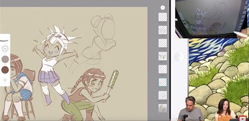
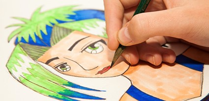

Recien llegados
.jpeg)
.jpeg)
Biblioteca
Cómo dibujar manga: una guía para principiantes.
Explora el influyente estilo visual de los cómics japoneses y aprende a dibujar manga e ilustraciones secuenciales de estilo anime.
¿Qué es el manga?
El manga hace referencia a todos los cómics japoneses. Al igual que los cómics de América del Norte, América del Sur y Europa, el manga incluye una variedad casi infinita de géneros y estilos. El manga incluye ciencia ficción, como la distopía ciberpunk Akira de Katsuhiro Otomo, novela histórica como Buda de Osamu Tezuka, y comedias de acción de superhéroes como One-Punch Man de ONE y Yusuke Murata. Entre otros, encontrarás mangas dramáticos, comedias de instituto, romances y de terror.
En Japón, históricamente el manga se dividía en categorías según el sexo y la edad; las dos más comunes eran shonen (para chicos jóvenes) y shojo (para chicas jóvenes). En los últimos años, estas categorías fueron perdiendo protagonismo y, por regla general, no existen fuera de Japón.
Hay convenciones visuales y narrativas reconocibles en el manga, y toda una generación de fans y de jóvenes artistas encontraron inspiración en este estilo y lenguaje visual de los cómics japoneses. Obras como Avatar: La leyenda de Aang, Steven Universe, y los dibujos modernos de Disney como Big Hero 6 tienen influencias del manga.
Cómo empezar a dibujar con estilo manga.
Los aspirantes a artistas manga pueden aprender intentando imitar determinados cómics o dibujos que les inspiren. “El primer paso es concederte a ti mismo este periodo de falta completa de originalidad”, dice el autor y profesor de manga Mark Crilley. “Considérate como el aprendiz que aprende de un maestro”. La escritora e ilustradora Mildred Louis también comenzó así. “Básicamente empecé a dibujar copiando anime”, cuenta.
“Mientras adquieres las habilidades, considérate como el aprendiz que aprende de un maestro”.
No solo capacitarás el ojo, sino que la mano se acostumbrará a trabajar con la pluma o el lápiz. “Tus músculos todavía no están capacitados y la memoria muscular tiene mucho que ver con el dibujo”, dice el artista de cómics Ethan Young.
Sin embargo, copiar es muy diferente a plagiar. A pesar de que reproducir otro trabajo para un ejercicio de dibujo es útil, hacer ver que es un trabajo original tuyo no está bien.
Conoce las proporciones del manga.
El manga se reconoce inmediatamente debido a las proporciones anatómicas de los personajes. Los ojos manga suelen ser más grandes que los reales, mientras que la boca suele ser más pequeña, y la barbilla, la nariz y la frente también suelen ser muy diferentes a las del cuerpo humano real. Normalmente, en el manga el cabello suele desafiar a la gravedad y el rostro de las caras no tiene nada que ver con lo que se intenta conseguir en el realismo. Sin embargo, esto no quiere decir que dibujar manga sea sencillo.
“Cuando empecé a dibujar rostros manga, seguí estos dos pasos”, dice Crilley. “Pensé: ‘No puede ser tan difícil. Es un dibujo animado’. Pero una vez comienzas a dibujar, te das cuenta de que sí que lo es. Tienes que prestar atención al delicado equilibrio que existe entre los elementos del rostro: si no lo clavas, todo se echa a perder”.
“Lo que más recomiendo es el dibujo natural”.
A pesar de que pueda parecer contradictorio, practica el dibujo de la anatomía real. “Lo que más recomiendo es el dibujo natural”, sugiere Louis, que indica que hay clases bastante accesibles para el público en muchas ciudades. “Tienes que entender bien las proporciones para que puedas ajustarlas mejor cuando las estilices al máximo”.
Haz un curso intensivo de cómo dibujar manga.En la primera de las tres sesiones, podrás ver este video tutorial paso a paso de Mark Crilley de ilustración manga en Behance.
Aprende el lenguaje visual del manga.
Los cómics y los dibujos emplean símbolos visuales para transmitir emociones, acciones e ideas. En los cómics y dibujos occidentales, un personaje que está durmiendo podría tener algunas zetas saliendo de su boca. Cuando de repente un personaje tiene una idea, un bombillo aparece sobre su cabeza.
El manga también tiene estos iconos visuales. Una gigantesca gota de sudor en la cabeza del personaje quiere decir que está enojado o frustrado. Una burbuja saliendo de la nariz de un personaje significa que está dormido. Las líneas de movimiento detrás de un personaje pueden significar movimiento, pero también pueden indicar que un personaje está realizando una declaración dramática o incluso que alguien es cabezota, a veces hasta un punto ridículo. Si el personaje está avergonzado, morirá (temporalmente) y se convertirá en un fantasma.
Muchos de estos símbolos comenzaron por ser representaciones literales antes de convertirse en una abstracción. “El enfado se representaba con una vena inflamada”, detalla Crilley. “Se convirtió en un icono de tres o cuatro líneas curvas. Para los que no estén familiarizados, podría parecer una especie de brillo o estrella”.
Este lenguaje visual también incluye jugar con los diferentes estilos visuales en el mismo cómic. Un personaje agresivo podría dibujarse con un estilo más realista y detallado para enfatizar ese enfado, mientras que si a un personaje se le gasta una broma podría parecer más una caricatura. Para que te familiarices con estos iconos, estudia algunos cómics internacionalmente conocidos como Naruto, Detective Conan o ¡Ah! Mi diosa. O examina la revista antológica Shonen Jump para que observes diferentes estilos en relación con estos iconos en cada volumen.
Puedes crear tu propio estilo manga.
Cada artista manga respetado tiene su propio estilo. Existe un fuerte contraste entre las oscuras ilustraciones futuristas de Alita, Ángel de combate de Yukito Kishiro en comparación con la comedia de aventuras One Piece de Eiichiro Oda.
Según Young, crecer como artista significa aprender de tus errores. Superar los retos de lo que dibujas de manera imperfecta es la manera de desarrollar tu propio estilo.
“Con las viñetas, los cómics y las narraciones, cuentas la historia a través de cientos de ilustraciones”, explica Young. “Todo ello debe presentarse como un conjunto sin que parezca aburrido a lo largo de 96 páginas más o menos. Los artistas principiantes tienen que aceptar el hecho de que su estilo podría cambiar de la página uno a la página 96. Está bien; vas a ponerte a trabajar en la siguiente obra nada más terminar”.
Sea cual sea tu estilo, hay un hueco para ti en el manga. El manga es muchas cosas, de samurái a steampunk o nekomimi. No hay un estilo correcto, lo que significa que —con estudio y práctica— puedes encontrar un lugar para el tuyo.